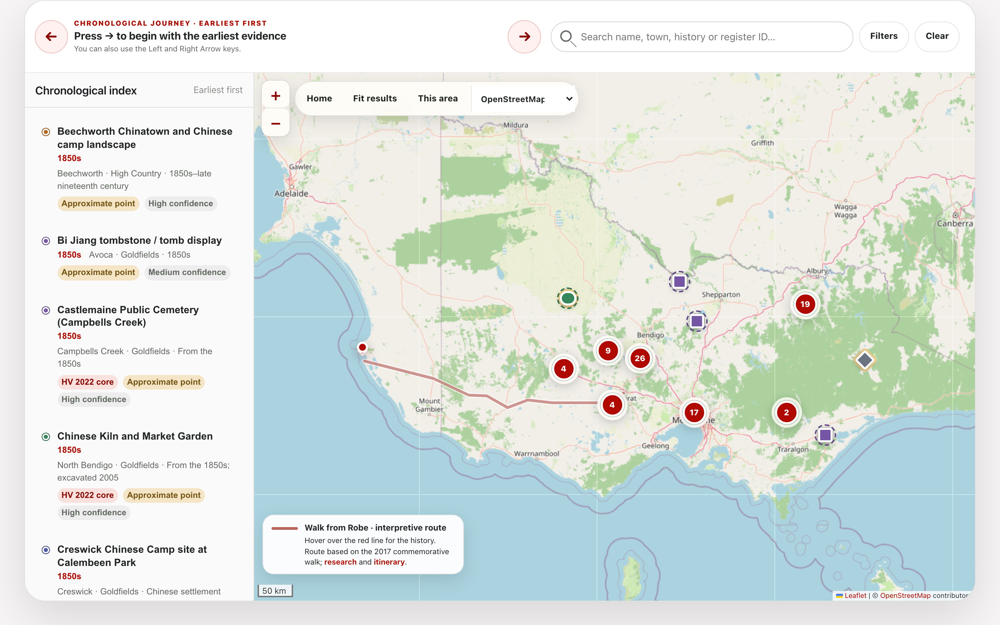

A Living History, Mapped Across Victoria
Concept-stage project proposal
Prepared for: Chinese Community Council of Australia
(Victoria) — CCCAV
Funding requested: AUD $4,000
Proposed delivery period: Three months from
approval
Prepared: 3 August 2026
Project stage: Concept definition, experience design,
demonstration website and feasibility planning
CCCAV seeks AUD $4,000 to develop the concept for a Victorian Chinese Heritage Map: a future digital resource that would make the long, diverse history of Chinese people in Victoria visible through place.
This is a concept-stage project. The requested funding is for defining what the resource should be, who it should serve, how its content and interface could work, and what would be required to develop and sustain it responsibly. It also includes a limited demonstration website that will make the concept tangible for CCCAV, community representatives, partners and potential funders. The demo will not be a complete or publicly launched service.
The concept will be informed by an existing body of exploratory research covering 86 potential heritage findings across Victoria. This material demonstrates the opportunity and provides realistic examples for design, but it will be treated as a research foundation—not as a completed inventory, approved dataset or public-ready product.
The investment will support:
At the end of three months, CCCAV will have a clear, evidence-informed concept package and a working demonstration website with which to consult community representatives and partners, communicate the opportunity, seek development funding and decide whether and how to proceed.
The proposed Victorian Chinese Heritage Map would be an interactive, evidence-led digital experience connecting places across metropolitan and regional Victoria to histories of migration, mining, work, worship, burial, enterprise, family, community organisation, resistance and commemoration.
The goal of this stage is to define that experience and demonstrate its core idea through a small, working website. Using a representative selection of research content, the demo will show how visitors might move between the historical overview, map or list, filters and individual place records. It will provide a concrete basis for discussion and review without implying that the full resource is ready for publication.
Its central interpretive idea is:
Chinese Victorian history is a living history of work, family, worship, resistance, enterprise and belonging—not only a story of the gold rush.
The concept study will explore how a future resource could enable people to:
Possible content types include cemeteries and funerary heritage, temples and churches, association buildings, mining and archaeological landscapes, market gardens, shops, cafés, industrial sites, museums, memorials and urban precincts. These possibilities will be tested and prioritised during the concept stage rather than assumed to be final.
Exploratory work already undertaken provides a strong basis for concept development.
| Exploratory research measure | Current position |
|---|---|
| Potential heritage findings assembled | 86 |
| Findings with documentary verification | 79 |
| Documentary-only findings | 1 |
| Findings requiring field verification | 6 |
| Distinct source links recorded | 267 |
| Findings with registered photographs | 41 |
These figures are working research measures. They do not imply that the proposed scope has been endorsed, that the inventory is exhaustive, that every place has been inspected, or that all text and images are cleared for publication.
Exploratory interface studies have also tested ways of combining a map, chronological index, evidence filters and place details. During this project, they will be used as discussion material and as a starting point for the limited demonstration website; neither the studies nor the demo will be presented as a completed public product.

Chinese people have been part of Victoria since before the gold rush and have made enduring contributions to the state’s economic, cultural, social and civic life. Yet this history is still too often reduced to nineteenth-century mining or presented as disconnected local episodes.
Heritage places offer a richer way into this story. Cemeteries and funerary burners record migration, death, ritual and community care. Temples, churches and association buildings show worship and organisation. Market gardens, sawmills, shops, cafés and mining landscapes demonstrate work, skill and enterprise. Museums, memorials and restored sites reveal how later generations have protected and interpreted this inheritance.
A well-defined place-based digital concept could:
Important resources already exist, including the Victorian Heritage Database, Heritage Victoria publications, cemetery registers, council heritage studies, museum collections, local histories, archives and specialist projects such as Scattered Legacy. Their work is essential, but information is distributed across systems created for different purposes.
A member of the public often needs to know which register, institution, cemetery trust, council or local-history website to search. It can be difficult to:
The concept stage will examine how a future CCCAV resource could connect—not replace—authoritative registers, collections and local knowledge. It will also identify where consultation, permission, specialist advice or additional research would be needed before development.
Within three months of commencement, the project will deliver:
The demonstration website is a concept-communication and review tool. A production-ready website, complete dataset, comprehensive rights clearance, production hosting, ongoing maintenance and public launch are not included in these deliverables.
The concept stage will be complete when:
| Period | Activity |
|---|---|
| Month 1 | Project initiation; confirm purpose, audiences, decision-makers and consultation boundaries; review exploratory research; define user needs, content principles and representative scenarios |
| Month 2 | Develop the information architecture, key user journeys and annotated interface concepts; build the limited demonstration website with representative content and interactions |
| Month 3 | Conduct the CCCAV concept and demo review; refine the direction; assess feasibility, safeguards and dependencies; finalise the demo, concept package, roadmap and handover |
| Cost item | Amount (AUD) |
|---|---|
| Discovery, audience and content definition | $1,000 |
| Concept design, user experience and demonstration website | $2,000 |
| Technical feasibility, safeguards and next-stage planning | $1,000 |
| Total project cost / funding requested | $4,000 |
The budget is a fixed concept-stage envelope. Allocation between sub-items may vary slightly by agreement while the total remains AUD $4,000. GST treatment, if applicable, will be confirmed before engagement.
The project draws on substantial exploratory research and interface studies, allowing the funding to focus on concept clarity, informed design decisions and a credible path to delivery. The demonstration website will give CCCAV and potential partners something concrete to review, while resolving purpose, scope, safeguards and technical assumptions before production development. This will support better-costed funding applications and reduce avoidable rework in a later stage.
This stage does not include:
The concept package will identify which of these activities are prerequisites for development and which could be undertaken in later phases.
| Principle or risk | Concept-stage response |
|---|---|
| Research may be mistaken for a complete or statutory record | Define visible disclaimers, evidence categories, review dates and links to authoritative sources |
| Sensitive places may be exposed | Establish criteria for generalising or withholding locations and for consulting relevant custodians |
| Errors or contested interpretations may arise | Propose transparent sourcing, uncertainty labels, review responsibilities and a future correction pathway |
| Image and content rights may be unclear | Specify a rights register and a clearance workflow for any later publication stage |
| The experience may exclude non-map or assistive-technology users | Include list-based discovery, semantic structure, keyboard use and accessible content in the design requirements |
| The concept may exceed likely future resources | Separate essential first-stage capabilities from later enhancements and state key cost drivers |
| The resource may become outdated | Define governance, review, maintenance and data-export needs for later planning |
The proposed resource would be an interpretation and discovery tool, not a statutory register, heritage certificate, cadastral map or record of physical inspection. A public map point would never constitute permission to enter land.
Subject to the concept-stage findings and future funding, later phases could include:
Consult priority audiences, community representatives and custodians; evaluate the demonstration website; validate representative records; resolve rights issues; refine content standards; and develop testable detailed designs.
Develop an accessible website and content-management workflow; prepare and review an agreed first-release dataset; conduct technical, usability and cultural-sensitivity testing; and establish hosting and governance arrangements.
Launch an approved public resource, monitor use, maintain content and progressively consider:
Progression between phases would depend on CCCAV approval, consultation outcomes, verified content, permissions and appropriate funding.
The immediate outcome will be a well-defined and reviewable concept supported by a limited demonstration website—not a public-ready service. Together, these will give CCCAV:
If subsequently developed, the resource could provide community members and descendants with recognition of a long and diverse presence; give students and educators an accessible place-based research starting point; help regional communities and visitors understand local places within a statewide story; and connect users back to authoritative sources and custodians.
Most importantly, the concept creates a pathway for heritage places to be connected with people. Future work on names, biographies and family stories could ensure that Chinese heritage in Victoria is understood not only as buildings, ruins and map points, but as the lives and contributions of individuals and communities across generations.
That CCCAV approve AUD $4,000 for a three-month concept-definition, experience-design, demonstration-website and feasibility-planning stage for the Victorian Chinese Heritage Map, subject to confirmation of GST treatment and the nominated CCCAV review process.
This investment will give CCCAV a clear, responsible and fundable basis for deciding on a future development stage, without prematurely committing to a particular platform, feature set or public launch.
Project credit: Concept and exploratory research by
Dr Jian Chen and the Chinese Community Council of Australia
(Victoria).
Organisation website: www.cccav.org.au